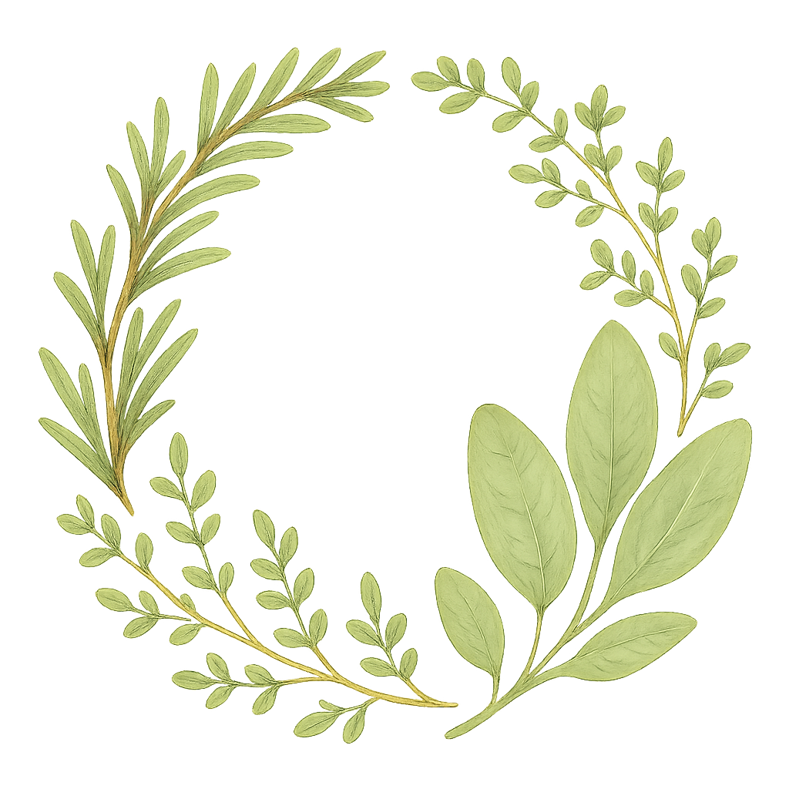

菜友集市
Portland 华人菜友周末大会 · 本周六 5月17日 11:00–2:30 · 📍
Tushita Farm
集市
EST 2024
第 17 次
周末换菜大会
始于 2024 · 菜友自治
🌾 我要出让
🌿 我想获得
供
12
查看全部 →
🍅
辣椒苗 · 朝天椒
老王 · 剩余 8 株 · 2 小时前
免费
会带去
🌶
番茄籽 · 樱桃番茄
林姐 · 剩余 20 包 · 昨天
换物
需确认
🌱
薄荷苗 · 苹果薄荷
张老师 · 剩余 5 株 · 3 天前
$2/株
会带去
求
8
查看全部 →
📋
寻 · 韭菜种子
小赵 · 需 1 包 · 1 小时前
🛒 查看全部集市